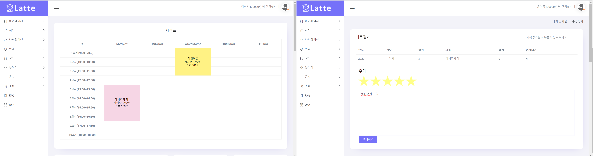

HTML5
HTML5 CSS
CSS JS/Jquery
JS/Jquery BootStrap
BootStrap Java
Java Spring
Spring JSP/JSTL
JSP/JSTL MyBatis
MyBatis MySql
MySql MariaDB
MariaDB STS
STS Git
Git AWS
AWSFINAL PROJECT(팀 프로젝트) 2022.09.05 ~ 2022.10.13
SPRING BOOT를 이용한 LMS SYSTEM(학사관리시스템)

Keyword
# LMS # Spring Boot # MVC # Maven # MyBatis # Ajax
# 학사관리시스템 # 회원가입 # 수강신청 # 수강평가 # 공지사항 # 개발인원: 4명
처음이자 마지막으로 진행한 팀 프로젝트입니다.
실생활에서 자주 쓰이는 LMS를 구현하고 싶어 협의후 주제를 선정하게 되었습니다.
- 학생은 수강신청 및 과제제출 및 수강평가를 할 수 있습니다.
- 교수는 과제작성 및 과제평가 및 과목공지사항 작성, 동아리가입신청 승인 등을 할 수 있습니다.
- 관리자는 각 항목의 List확인 및 장학금 수정, 공지사항 작성 등을 할 수 있습니다.
다같이 진행했던 초반 회원가입과 홀로 맡았던 수강신청 및 수강평가(별점)를 통해 자바스크립트와 Ajax의 사용법을 익힐 수 있었습니다.
이외에도 JPA repository와 pageable의 사용을 통해 새로운 분야를 알게 되었습니다.
DB설계부터 시작했던 첫 프로젝트이다보니 너무 많은 정규화가 되어있었습니다. 덕분에 각종 조인을 익힐수 있었으며 DB설계의 중요성을 깨달았습니다.
Development Environment
OS : Window10
Library : Servlet(4.0), BootStrap4, JSTL(1.2), jQuery(3.6)
Language : HTML5, CSS3 , Java(JavaSE-11), JavaScript(ES6)
Database : MariaDB, HeidiSQL
WAS : Apache Tomcat9
IDE : SpringToolSuite4
Service Environment
OS: Ubuntu (18.04)
Platform : AWS Lightsail
Database : MariaDB, HeidiSQL
Language : Java